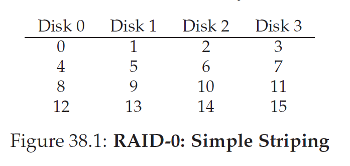
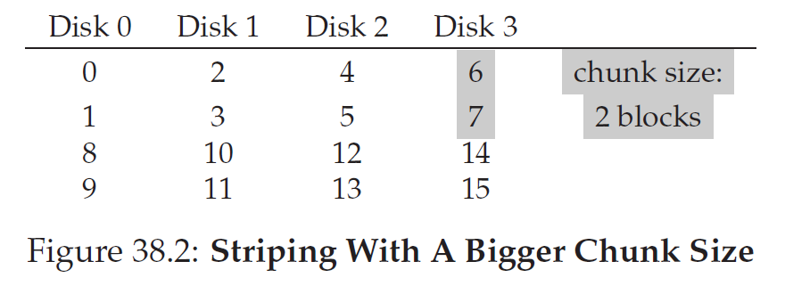
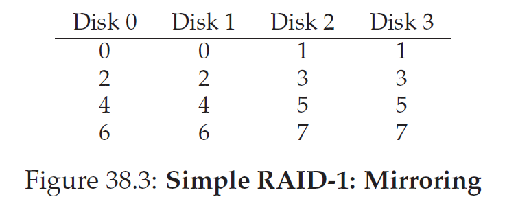
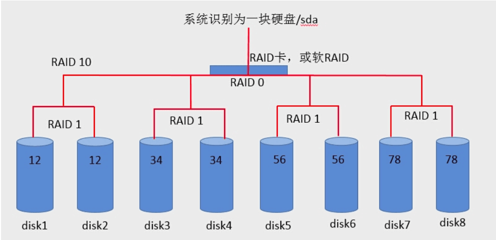
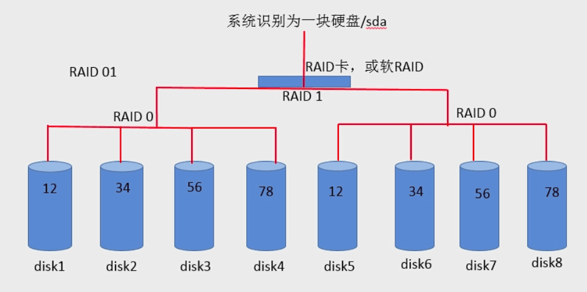
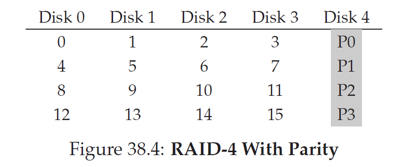
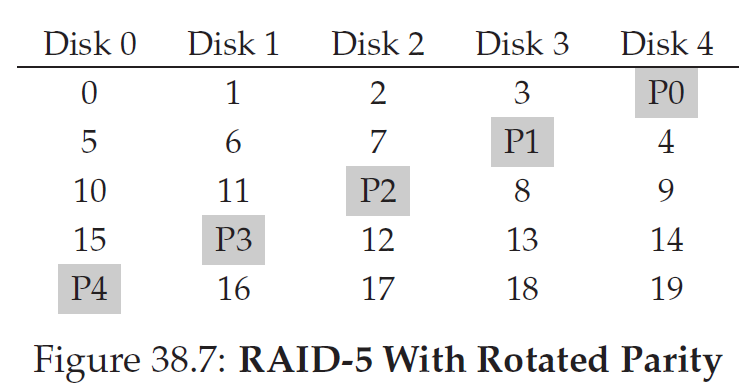

Redundant Array of Inexpensive Disks(RAID): 独立磁盘冗余阵列，通常简称为磁盘阵列
评价维度
capacity：given a set of N disks each with B blocks, how much useful capacity is available to clients of the RAID
reliability：How many disk faults can the given design tolerate
performance
RAID-0：striping
RAID-0 是一种简单的、无数据校验的数据条带化技术。实际上不是一种真正的 RAID ，因为它并不提供任何形式的冗余策略。
将每一行的block称为是一个stripe
也可能是按照chunk来排列，比如一个block为4kb，如果我一个chunk取8kb，将是如下情况：
RAID-1:Mirroring
RAID-1 采用镜像技术,同时在阵列中产生两个完全相同的数据副本，分布在两个不同的磁盘驱动器组上。镜像提供了完全的数据冗余能力，当一个数据副本失效不可用时，外部系统仍可正常访问另一副本，不会对应用系统运行和性能产生影响。
RAID1+0
RAID0+1
RAID Level 4: Saving Space With Parity
对每一bit做奇偶校验存在一个专门的磁盘的对应bit上
对于sequential write，先计算出P，然后直接一次写一个stripe
对于random wirte，将面临如何一边写一边改P，对应的有两种方式：
additive parity: 先将其余盘的所有对应的block读出来然后计算P，然后同时写对应block与P，这样的缺点是当disk比较多的时候需要大量的读次数
subtractive parity: 就是看要覆盖的block和要写的block对应bit是否相同，如相同，则对应p不变，如不同则翻转p值，即$P_{new} = (C_{old} ⊕ C_{new}) ⊕ P_{old}$
在性能分析时，我们分析subtractive parity， 虽然可以并行的读data disk 但是由于parity disk只有一个，故而只能依次来进行（small-write problem），同时每个周期需要读一次写一次，故而只有r/2
RAID Level 5: Rotating Parity
summary
To conclude, if you strictly want performance and do not care about reliability, striping is obviously best. If, however, you want random I/O performance and reliability, mirroring is the best; the cost you pay is in lost capacity. If capacity and reliability are your main goals, then RAID-5 is the winner; the cost you pay is in small-write performance. Finally,if you are always doing sequential I/O and want to maximize capacity,RAID-5 also makes the most sense.